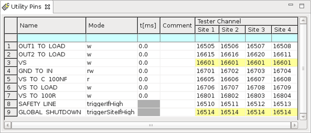

Utility Pins editor
Utility pin names are assigned to utility pogo pins in the Utility Pins editor.

The following table describes the parameters in the Utility Pins editor:
| Name |
A descriptive name for the pin. The pin name can have up to 16 alphanumeric characters. Spaces and the following characters are not allowed: # ; (‘' ) ? @ , Other SmarTest windows will always display the pin name when they refer to this pin. You can access the utility pins with the test method library (GetUtilityLines and SetUtilityLines), test method API or your own test method. |
| Mode |
The parameter defines the operating mode of the utility line using the following specifiers:
For a write-only utility line, specify the w mode. For a read-write utility line, you can select one of three:
Utility lines of the optional Utility Card can also be configured as safety lines or as global shutdown line for hardware‑controlled shutdown of XPS256 pins:
For more information, refer to XPS256 safety line and DUT board disconnect. |
| t[ms] |
The optional parameter specifies a wait time from when the utility line state is changed until the next action is executed, such as the settling time of the controlled user-relay. The wait time defined here is used in the following cases:
When multiple utility lines are controlled at a time, they are switched in parallel and the longest settling time of all the utility lines is used. This setting is valid only when the utility lines are used in the w or rw mode. The default value of the settling time is 0 ms. You can also set a wait time in the routing set using a different procedure, instead of this parameter. |
| Comment |
An optional description of the pin. |
| Tester Channel |
The parameter specifies the utility pogo block and the utility line of the pogo block. The first three digits define the utility pogo block of V93000 EXA Scale systems. The last two digits specify the utility line number. Valid utility line numbers are 01 … 32 for the 4-row utility block. Note that the utility line number ( 01 … 32) is different from the number (00 … 31) used in the UTST firmware command and as pin designator of the utility pogo blocks. The background color will change to yellow for re-used utility lines: The screen shot above shows this feature for the utility pin "VS". "VS" is assigned to the a single utility pogo pin "16601" for all four sites. For the position of the utility blocks, refer to DUT interface layout. |
Functional changes
- Introduced in SmarTest 6.5.0
- SmarTest 7.1.3: Changed the parameter "Operation Mode" to "Mode".
- SmarTest 7.1.3: Changed the parameter "Delay [ms]" to "t[ms]".
- SmarTest 7.10.1: Three-digit utility pogo block designator on V93000 EXA Scale systems.
- SmarTest 7.10.2: New keywords for the Mode parameter to configure shutdown of XPS256 pins using utility lines.